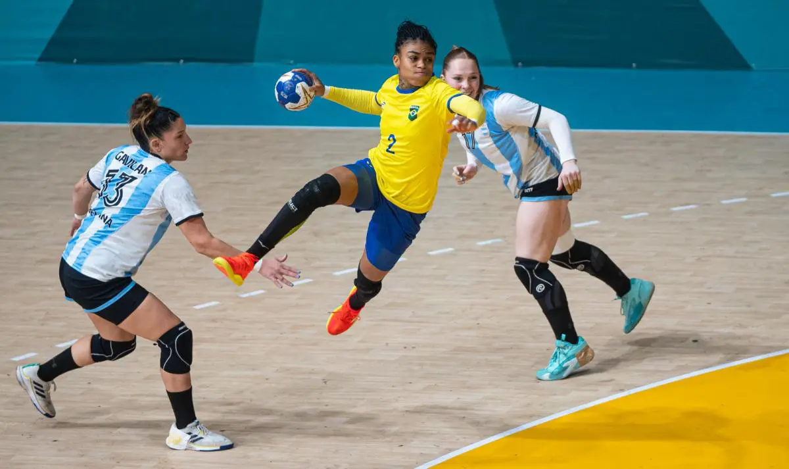
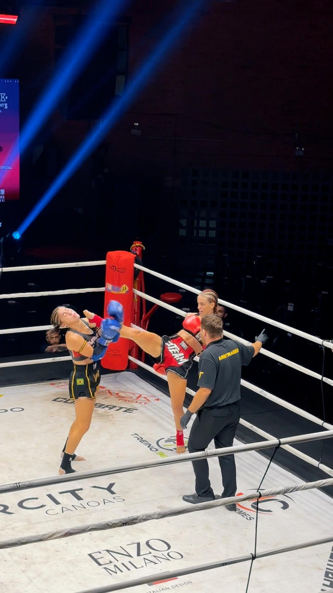
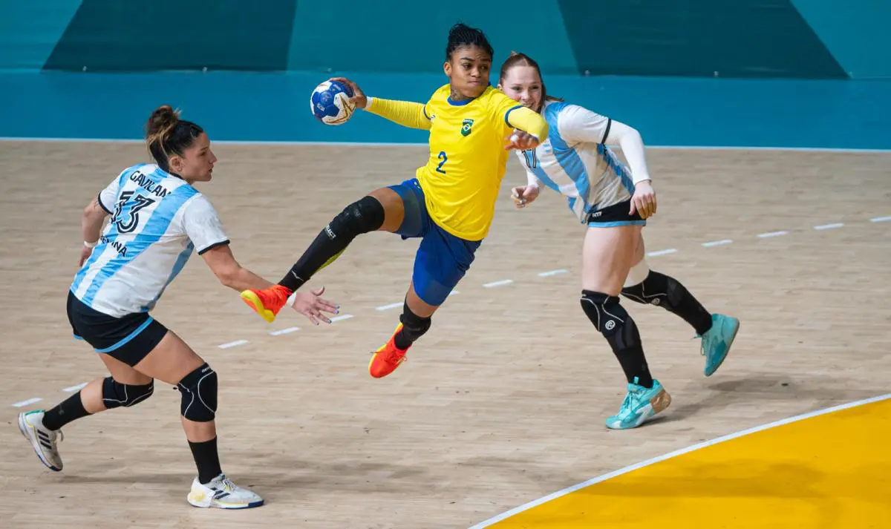
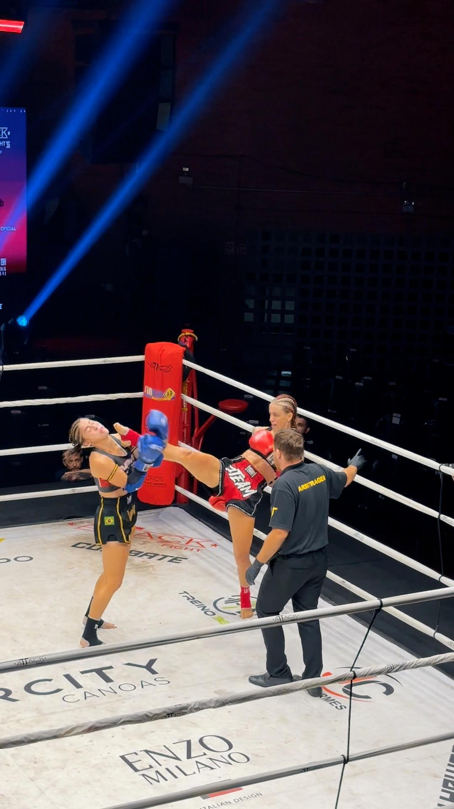
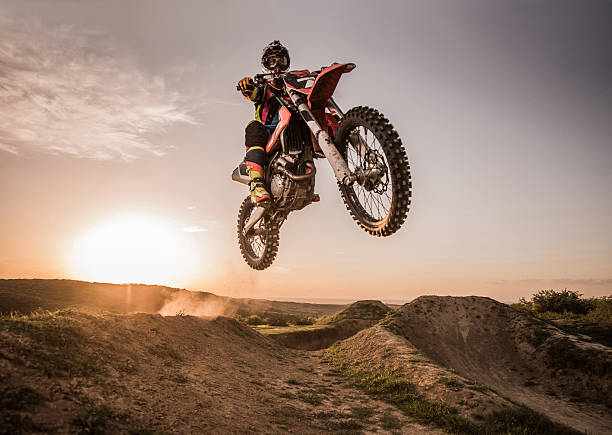
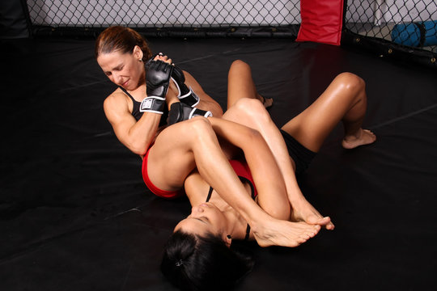
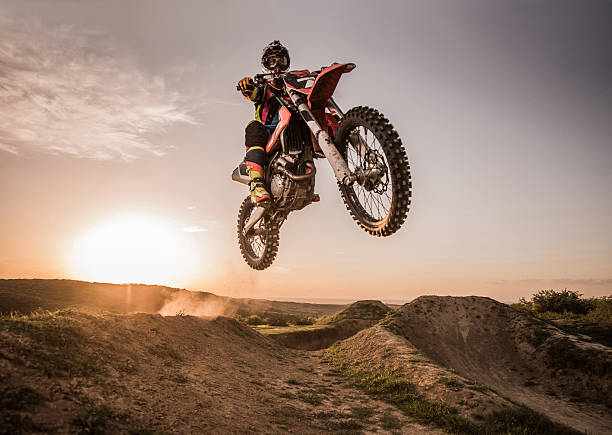
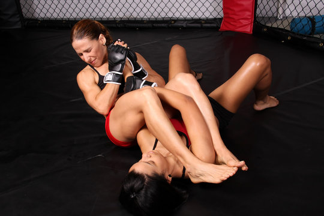

A conexão entre a prática de atividades físicas e a saúde mental é amplamente reconhecida por especialistas. Estudos indicam que o exercício regular pode diminuir o risco de depressão e retardar o declínio cognitivo em pacientes com Alzheimer. Pesquisas recentes revelam que atividades como caminhada, corrida e ciclismo desempenham um papel fundamental na preservação da função do sistema nervoso, mesmo com o avanço da idade. Diante da redução global nos níveis de atividade física, a Organização Mundial da Saúde (OMS) alerta para a crescente adoção de estilos de vida sedentários. Assim, a falta de exercícios vai além de uma preocupação estética, tornando-se uma séria questão de saúde pública, responsável por cerca de 2 milhões de mortes anuais.
 



 


